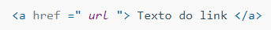

Um hiperlink é uma conexão de um recurso da Web para outro. Os links permitem que os usuários passem facilmente de uma página para outra, em qualquer servidor em qualquer lugar do mundo.
Um link tem duas extremidades, chamadas âncoras, onde começa na âncora de origem e aponta para a âncora de destino, que pode ser qualquer recurso da Web.
Os links são especificados em HTML usando a <a> tag.
tag de abertura <a> e a tag de fechamento </a> se torna a parte do link que o usuário vê e clica em um navegador.
Um link ou hiperlink pode ser uma palavra, grupo de palavras ou imagem.
O "href" é o atributo que especifica o destino do link. Seu valor pode ser um URL absoluto ou relativo. Um URL absoluto é o URL que inclui todas as partes do formato do URL, como protocolo, nome do host e caminho do documento, por exemplo, https://www.google.com/
O "target" é o atributo que informa ao navegador onde abrir o documento vinculado e existem quatro alvos definidos.